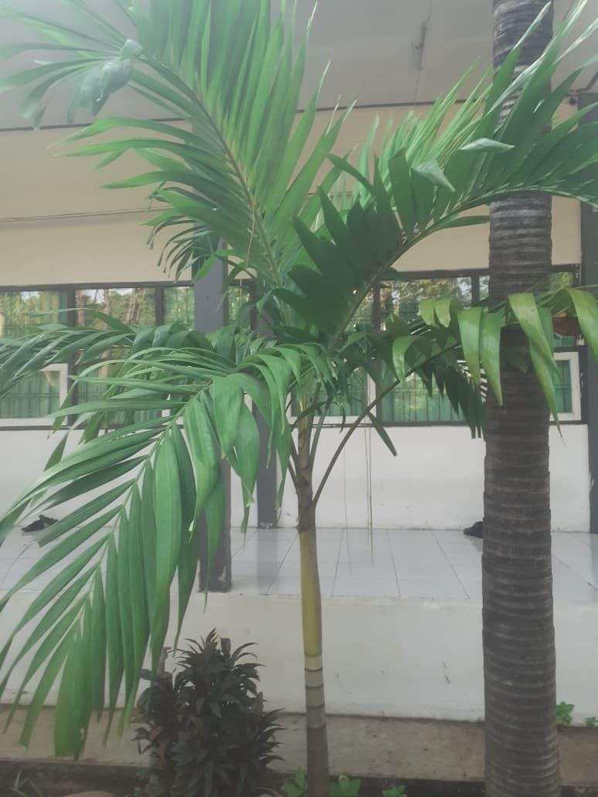

🌴 Tanaman Palem Putri (Veitchia merillii)

Deskripsi
Palem Putri (Veitchia merillii) adalah salah satu jenis tanaman hias populer yang banyak ditanam di halaman rumah, taman, dan jalanan kota.
Tanaman ini memiliki batang lurus ramping dengan daun menyirip yang rapi. Penampilannya elegan sehingga sering digunakan sebagai penghias lingkungan dan peneduh.
Cara Perawatan
- Letakkan di tempat yang terkena sinar matahari langsung.
- Siram secara teratur, 2–3 kali seminggu atau sesuai kondisi tanah.
- Gunakan pupuk kompos atau pupuk NPK sebulan sekali.
- Lakukan pemangkasan daun yang kering agar tetap rapi.
Manfaat
- Sebagai tanaman hias yang mempercantik halaman dan taman.
- Memberikan kesan teduh dan segar pada lingkungan.
- Menyerap polusi udara di sekitar rumah.
- Menambah nilai estetika properti.